Exploring the Power of Flow Models
Pretrained PixNerd · 512 × 512 images · Euler step size 0.02 · seed 180 unless noted
1.1 · Noisy training inputs
I used the same image and noise at all three times. With xₜ = (1 − t)ε + tx₁, larger t keeps more of the image. The input below is separate from the supplied Berkeley Campanile used later.
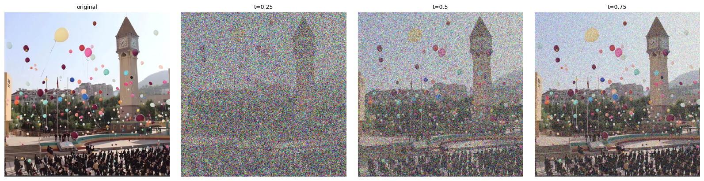
1.2 · Classical denoising
I divided each noisy input by t, then tried Gaussian blur with σ = 1, 2, 4, 8, 16. I selected the lowest MSE against the original. Stronger blur removes noise but also loses detail.
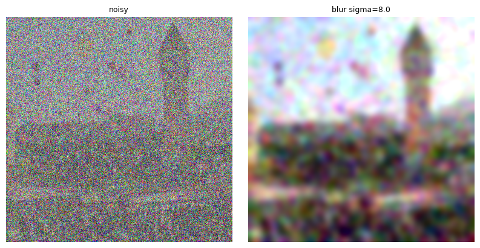
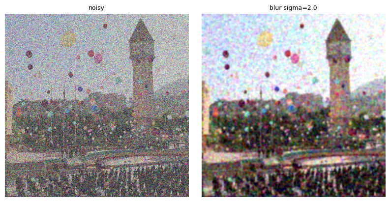
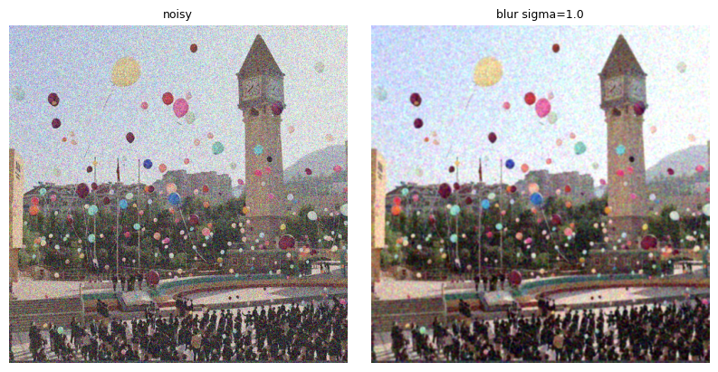
1.3 · One-step denoising
Using “a high quality photo”, I estimated the clean image with x̂₁ = xₜ + (1 − t)vθ(xₜ, t, c). One-step denoising keeps more detail than blur, although the low-t reconstruction changes some details.
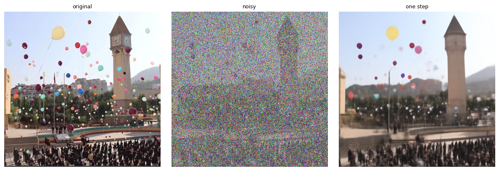
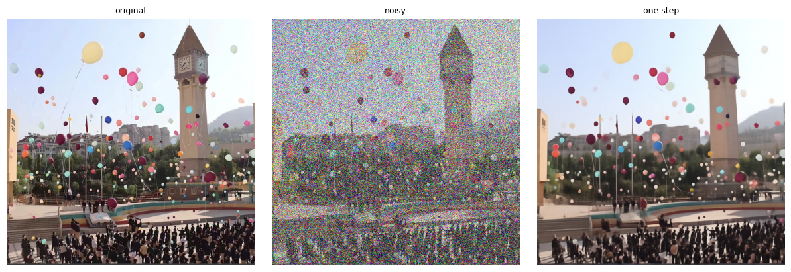
1.4 · Visualizing velocity
The predicted update is (1 − t)vθ; the ground-truth update is x₁ − xₜ. Error is the per-pixel RGB RMS difference, calculated before display scaling. Updates share one symmetric scale, and error maps share one linear scale. The original is shown in 1.1. Differences are strongest around detailed image regions.
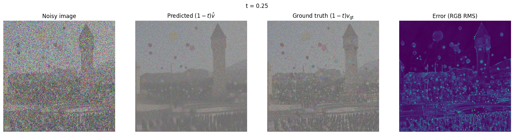
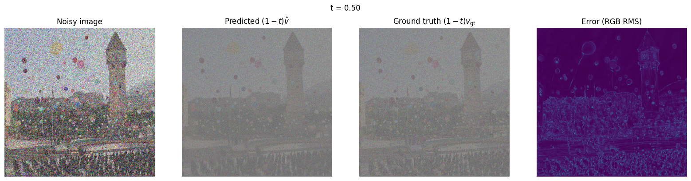
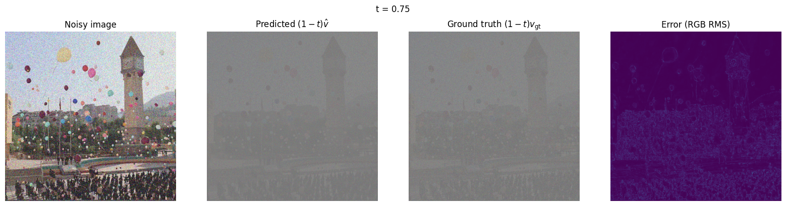
1.5 · Iterative denoising
I started at t = 0.50 and took 25 Euler updates, recomputing velocity each time. Below are the initial state and every fifth update. The implementation shortens the last step to reach t = 1.
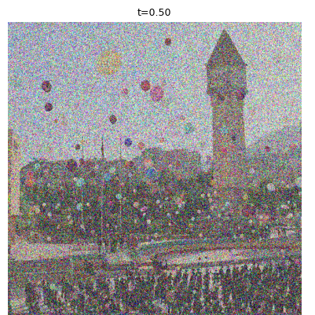
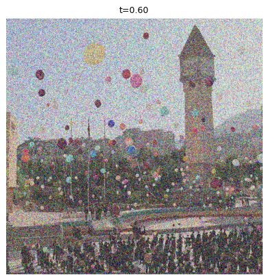
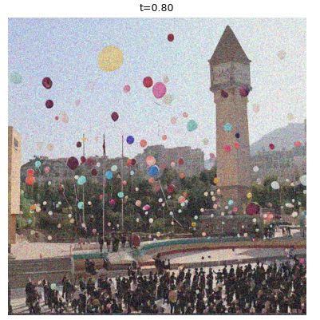
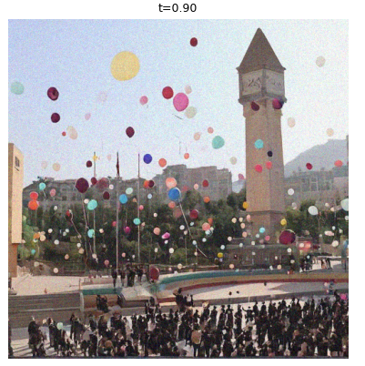
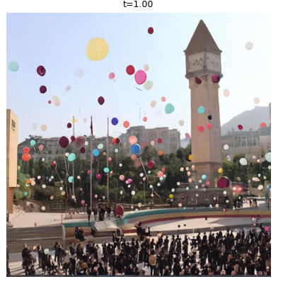
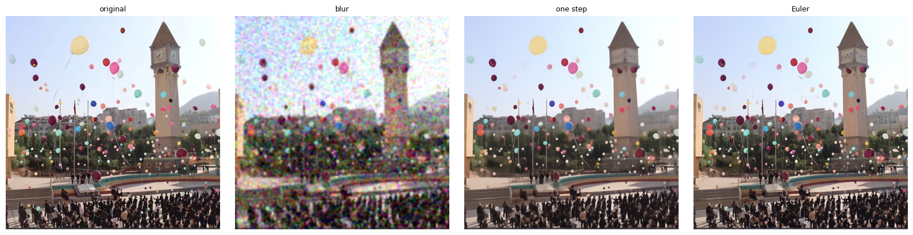
On this image, MSE was 0.04375 for blur, 0.01530 for one-step denoising, and 0.01800 for Euler denoising. Euler does not improve MSE here; both learned methods retain more detail than blur.
1.6 · Generating from noise
I integrated five independent Gaussian starting states from t = 0 to 1 using “a high quality photo”. The seeds are 180–184. All five outputs are portraits; some faces and body details are distorted.

2.1 · Classifier-free guidance
I used vCFG = vc + w(vc − vu), w = 7, and an empty-string unconditional prompt. These samples reuse the five initial noises from 1.6. Faces look clearer and more consistent, but the generic prompt still mostly produces similar portrait compositions.

3.1 · Image-to-image editing
I added noise at each starting time and sampled to t = 1 with “a high quality photo”, w = 7, and h = 0.02. Low starting times can replace the subject; higher times preserve more of the input.
Original, then t = 0.02, 0.04, 0.06, 0.10, 0.14, 0.25, 0.50 (left to right, top row then bottom row).

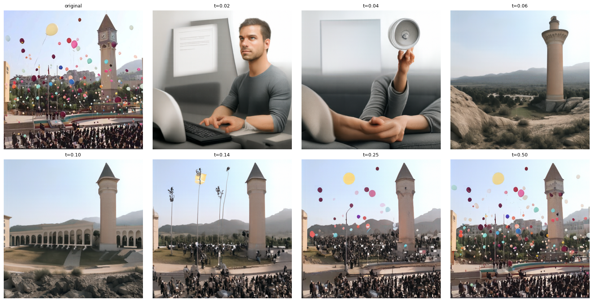
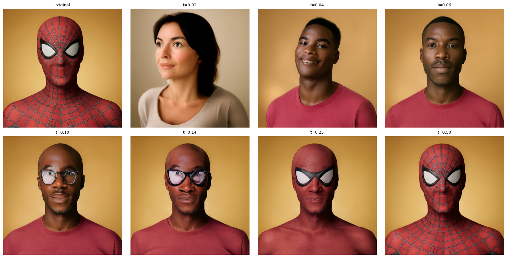
Web image and two drawings
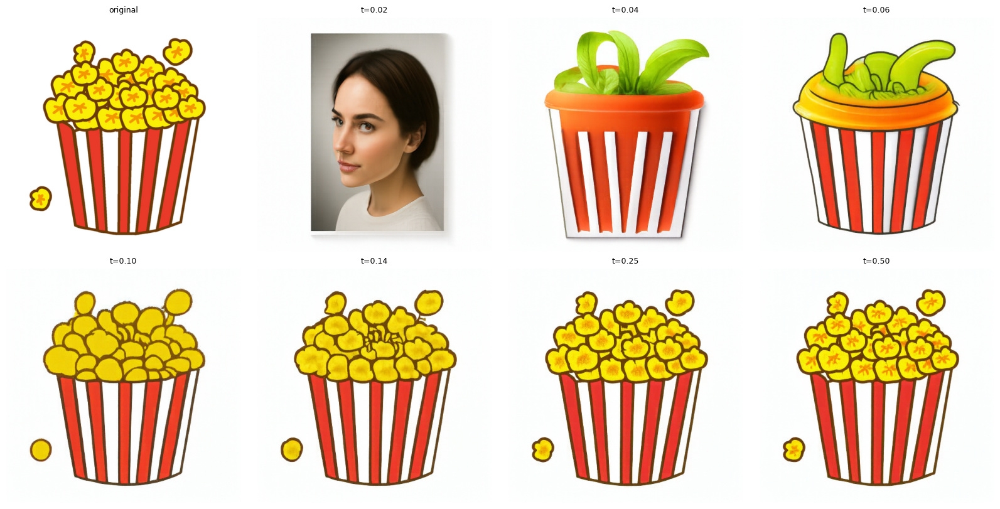
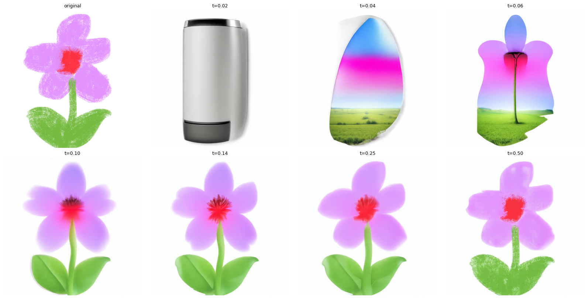
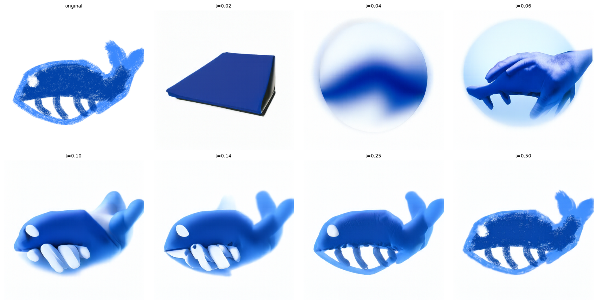
The flower and whale gain smoother shading at intermediate times. At high starting times, the original drawing texture returns. Not every output becomes photorealistic.
3.2 · Text-guided editing
I repeated the same seven starting times with a different prompt for each input. Original, then t = 0.02, 0.04, 0.06, 0.10, 0.14, 0.25, 0.50 (left to right, top row then bottom row).
Prompt
a photograph of a campanile with two wings
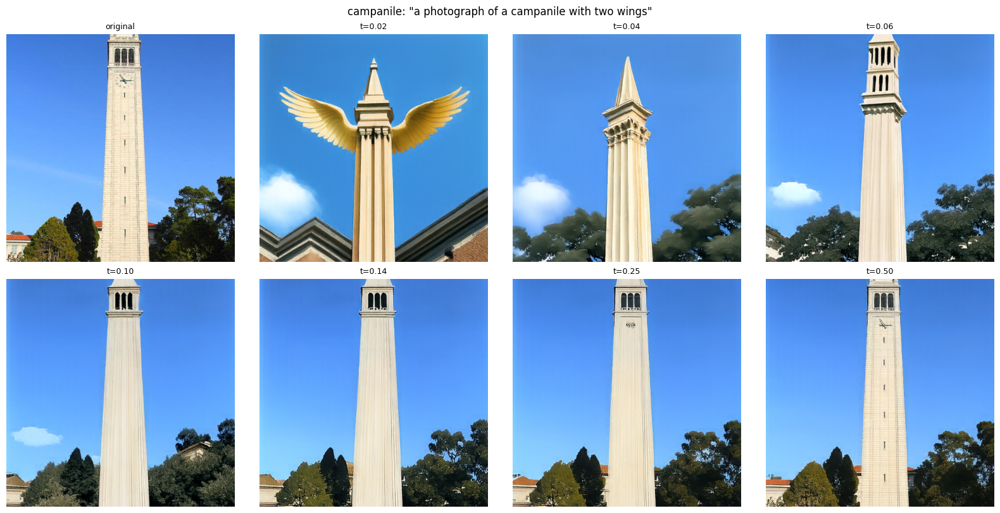
Prompt
a picture of one campanile and some balloons on the sky
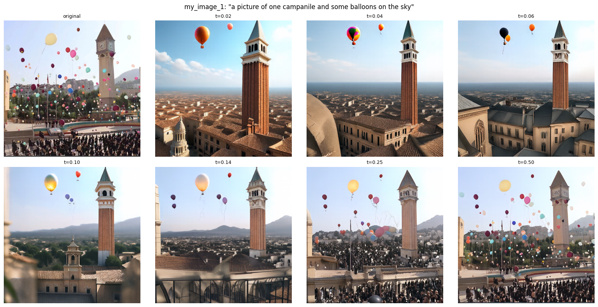
Prompt
spiderman with his mask and he is spitting out spider silk from the mouth
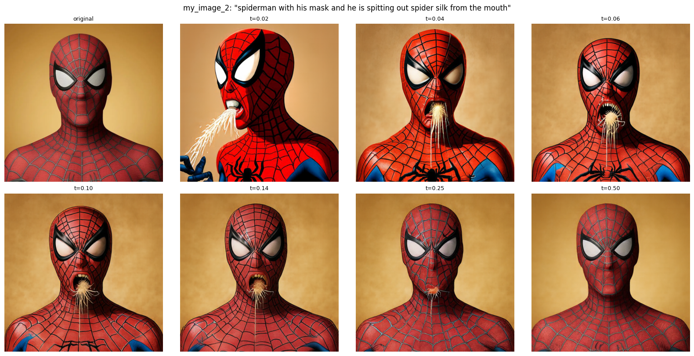
Wings and the web-like strands are strongest at low starting times. At higher times, the original images dominate. The balloon prompt also changes the tower and surrounding scene at low t.
3.3 · Visual anagrams
I averaged the upright guided velocity with the rotated-back guided velocity of the 180° view. Both predictions use the same time. Each pair below shows the same image in two orientations.


The village/horse pair gives a clearer change in subject. In the old-man/campfire pair, the face is stronger than the campfire scene.
3.4 · Hybrid images
I combined low-frequency and high-frequency guided velocities with lowpass(va) + vb − lowpass(vb). The low-pass filter uses σ = 16 and kernel size 265. Both branches use w = 7 and h = 0.02.
Hybrid 1
Close prompt: a lithograph of a waterfall. Distant prompt: a lithograph of a skull.

Hybrid 2
Close prompt: a lithograph of a forest. Distant prompt: a lithograph of a cat.


The waterfall and forest details are visible. The intended skull and cat are less distinct in the reduced views, so these hybrids only partly achieve the intended distance effect.
Flow Matching from Scratch
MNIST · single-step denoising · time-conditioned and class-conditioned UNets
1.1 · UNet implementation
I used convolution, BatchNorm, and GELU blocks, two downsampling stages, a pooled bottleneck, two upsampling stages, and three skip connections. The network maps a 28 × 28 image to an output of the same size. The denoiser uses D = 128; flow models use D = 64.
1.2 · Adding noise
MNIST intensities are in [0, 1]. I added Gaussian noise with z = x + σε, reusing one image and noise tensor across the seven noise levels.
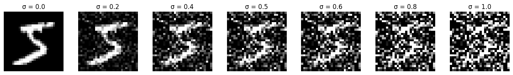
1.2.1 · Single-step denoising
I trained for 5 epochs with σ = 0.5, batch size 256, D = 128, and Adam learning rate 0.0001. Each batch receives fresh noise; the MSE target is the clean digit. Both checkpoints are evaluated on the same ten test images and noise.
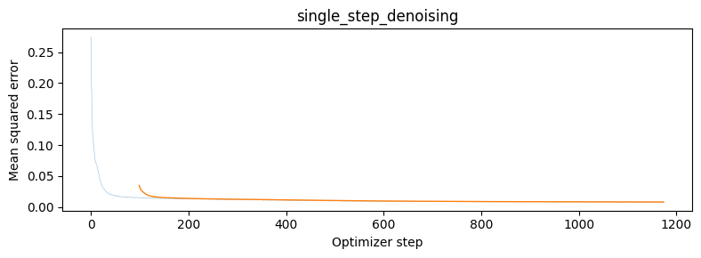
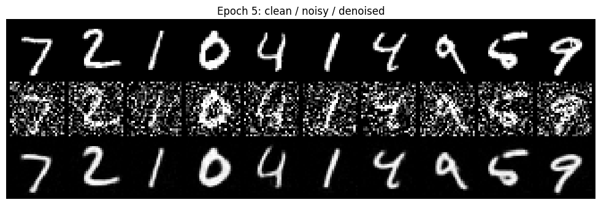
Most noise is removed after one epoch. At epoch 5 the backgrounds are cleaner and the strokes are better defined.
1.2.2 · Out-of-distribution testing
I tested the model trained at σ = 0.5 on the same test digit with seven noise levels. Reconstruction remains clear at moderate noise levels. At σ = 0.8 and 1.0, extra marks and distorted strokes appear.
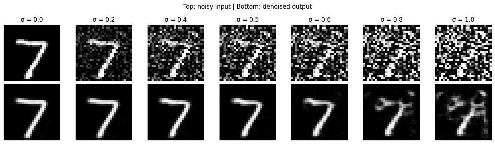
1.2.3 · Denoising pure noise
I trained a fresh model for 5 epochs using independent Gaussian noise as input and clean digits as targets, with the same hyperparameters as 1.2.1.
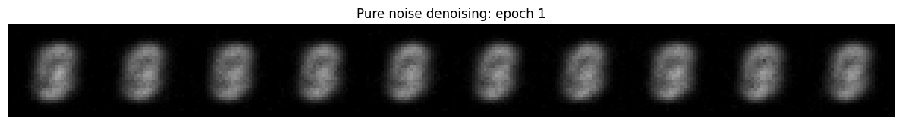
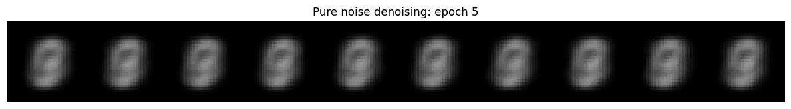
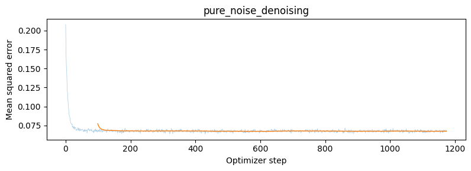
Different noise inputs produce similar blurry shapes. The input noise is independent of the target digit, so it gives the model no information about which digit to draw. With MSE, the best prediction is the mean training image, which combines the shapes of different digits.
2.1–2.2 · Time-conditioned flow matching
Two fully connected blocks embed t and modulate decoder features. I sampled xt = (1 − t)x0 + tx1 with t uniform in [0, 1], and trained the network to predict x1 − x0. Training uses 10 epochs, batch size 64, D = 64, Adam starting at 0.01, and exponential decay γ = 0.1^(1/10), stepped after each epoch.
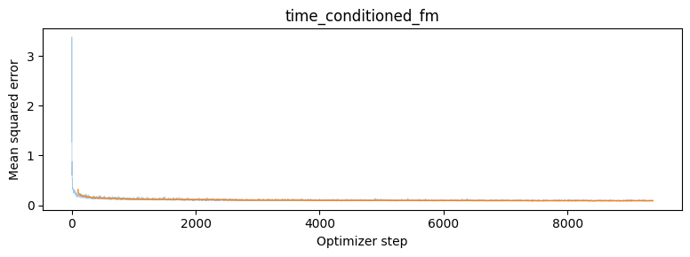
2.3 · Time-conditioned sampling
I sampled with 300 Euler updates from t = 0 to 1. Each checkpoint uses the same seeds 0–9. Some digit shapes emerge, but several samples still have broken or ambiguous strokes.
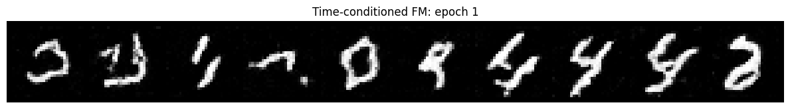
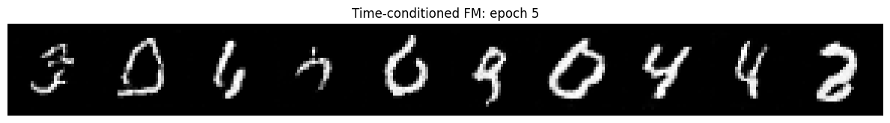
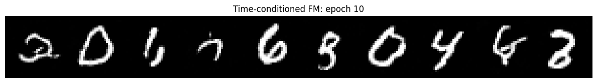
2.4–2.5 · Class-conditioned flow matching
I added one-hot digit labels through two more fully connected blocks. During training, 10% of class vectors are set to zero. The model uses D = 64, batch size 64, 10 epochs, Adam starting at 0.01, and the same exponential scheduler.
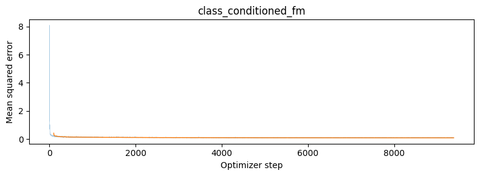
2.6 · Class-conditioned sampling
Each checkpoint produces four examples of each digit, arranged in columns 0–9. I used 300 Euler steps, seed 180, and v = vuncond + 5(vcond − vuncond). The digits are clearer and match their labels more reliably by epochs 5 and 10.
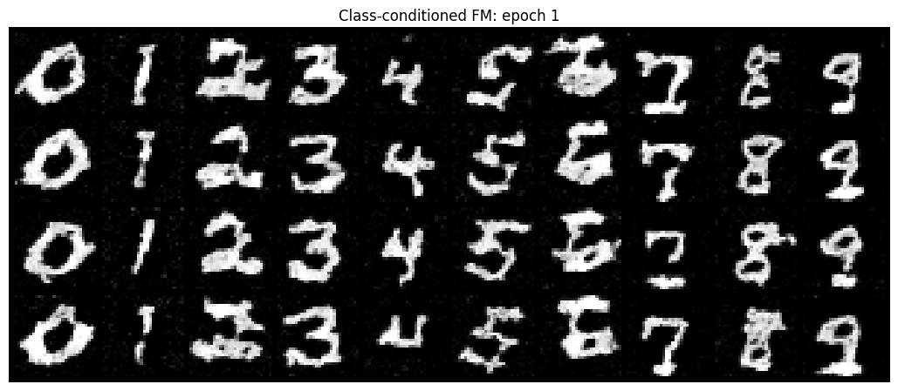
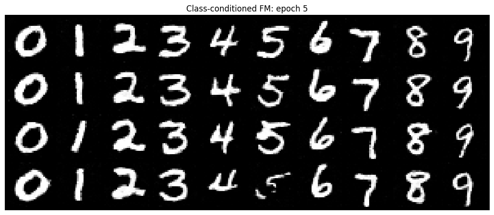
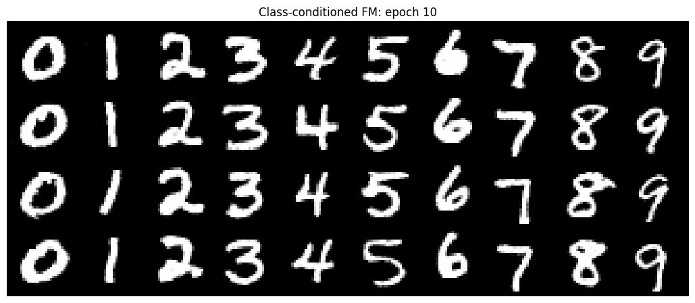
2.6 · Removing the scheduler
I removed the scheduler and used a fixed learning rate of 0.001 instead of starting at 0.01. The smaller learning rate keeps the updates moderate without decay. I trained a new model for 10 epochs and kept the sampling settings the same. The loss decreased steadily, and the generated digits are clear and match their labels. The results look similar to those from the model trained with a scheduler.
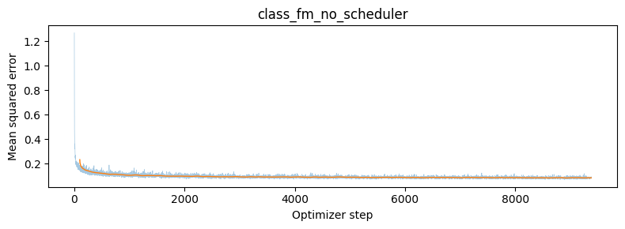
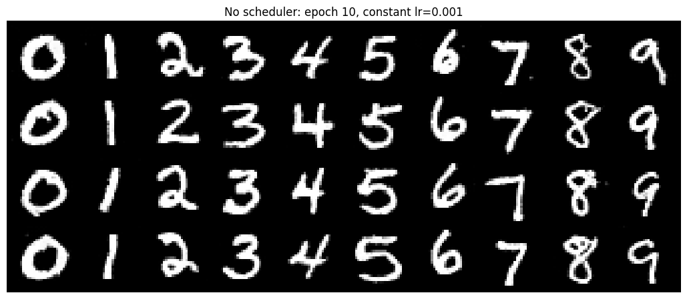